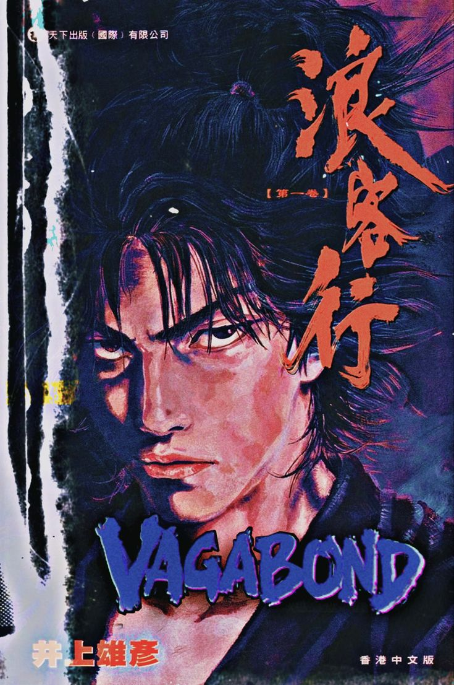

MONSTER
Tenma é um médico japonês que trabalha em um hospital alemão e é considerado o melhor do lugar. Um dia, deixa de atender um turco que estava na frente, para operar um famoso cantor. Ao encontrar a família inconsolada do turco, percebe que deixou de cuidar de um paciente que morreu, para salvar a vida de um figurão.
ONE PIECE
Monkey D. Luffy, um jovem, se torna usuário de Akuma no Mi, a Fruta da Borracha, acidentalmente quando era criança. Ele reúne uma tripulação de piratas e embarca em uma jornada épica para se tornar o Rei dos Piratas.
